BlockOut — Kiểm thử LDPlayer và ảnh bằng chứng
Ngày kiểm tra: 10/10/2026 · BlockOut · 1006 đang cài và mã decompile 1006 (14/09/2026).
Quy tắc ghi kết quả
Mỗi case có tiền điều kiện, thao tác, kết quả quan sát, ảnh và đối chiếu code/config. Đã quan sát chỉ xác nhận nhánh chạy trong phiên này. Chưa chạy không phải pass. Không truy cập được có thể do eligibility hoặc dữ liệu phiên. Bất nhất yêu cầu nêu hai nguồn cụ thể, không tự chọn nguồn thuận tiện.
Ma trận case biên mở rộng
| Case | Tiền điều kiện và thao tác | Kỳ vọng để kiểm | Bằng chứng cần lưu |
|---|---|---|---|
| Hết thời gian khi animation còn chạy | Đợi thao tác gần hết giờ | Một kết quả cuối nhất quán; không vừa thắng vừa thua | Video, timestamp, state, reward log |
| Hai lần chạm Play On | Popup mở, đủ coin | Không trừ hai lần cho một grant | Coin trước/sau, purchase attempt ID |
| Hủy thao tác booster | Chọn booster rồi quay lại trước xác nhận | Không tiêu vật phẩm nếu chưa thực thi theo luật | Inventory, ảnh trạng thái chọn |
| App xuống nền giữa màn | Vào background rồi resume | Timer/board xử lý đúng thiết kế của loại màn | Ảnh trước/sau, app version |
| Mất mạng khi claim | Phần thưởng đủ điều kiện | Không mất quà, không phát trùng khi retry | Local pending, receipt/claim status |
| Kỳ mới đến khi popup kỳ cũ mở | Giữ popup qua hạn | Kết quả cũ không lẫn tiến độ mới | Hai instance ID và clock |
| Thay đổi collection | Gói thưởng có biến thể WithCollection | Chọn đúng quà và không dùng card pack đã hết mùa | Config và payload thưởng |
| Thua sát checkpoint | Chỉ thiếu một win tới chốt | Rơi đúng chốt, không xóa toàn bộ lịch sử | Progress trước/sau |
| Rewarded không có quảng cáo | Nút khả dụng nhưng SDK no-fill | Không treo input, không tiêu quyền mà không trả gì | SDK callback và ảnh |
| IAP hủy | Mở sheet thanh toán, hủy | Không phát quà, có thể thử lại | UI kết quả và inventory |
| IAP thành công nhưng callback muộn | Sandbox billing | Xác minh rồi cấp một lần, khôi phục sau restart | Transaction ID đã ẩn và log xác minh |
| Không đủ coin | Tài khoản kiểm thử ít coin | Mở đúng shop/offer, quay lại giữ ngữ cảnh | Before/after, source/reason |
| Đã mua pass rồi kỳ kết thúc | Pass active + unclaimed | Trao đúng quà, gỡ quyền theo quy định | Entitlement expiry và reward log |
| Mốc mở khóa | L−1, L, L+1 | Hiển thị đúng giới thiệu, không show trước dữ liệu | 3 trạng thái cùng build/config |
| Server trả config không hợp lệ | Môi trường test có quyền điều khiển backend | Fallback có kiểm soát, không đè cache tốt | Validation reason và selected source |
Các case fault injection, mua thành công và tài khoản mới cần môi trường riêng phù hợp. Bảng trên là kế hoạch kiểm chứng mở rộng, không phải tuyên bố đã thực hiện tất cả trên tài khoản hiện tại.
Kết quả thực thi mới
Đọc bảng test và gallery được sinh từ test_results.json; chỉ các dòng có trạng thái Đã xác minh mới là kết quả được xác nhận. Ảnh thô giữ nguyên trong screens/test_20261010, thao tác có timestamp trong facts/runtime/test_20261010/actions.jsonl.
Đối chiếu tài nguyên sau phiên
BlockOut: coin 996.979 → 996.179 = +100 thưởng Streak Race −900 Play On; Rocket −1, UFO −1; Time Freeze nhận +1 Daily Gift rồi dùng −1, nên tổng không đổi. LevelProgress vẫn 350, retryCount 2 → 3; về Home 4 life. Pre-booster không dùng.
Snapshot before/after và actions.jsonl được giữ trong facts/runtime/test_20261010. Raw playerprefs dành cho tra cứu nội bộ, không đưa vào workbook. Phiên này không tạo giao dịch thật và không chỉnh inventory/config/seed.
| ID | Case / thao tác | Kết quả | Trạng thái | Ảnh |
|---|---|---|---|---|
| BO-T01 | Khởi động | Hai lần đầu ảnh đen; sau force-stop cả hai game và chỉ mở BlockOut thì load được. Chưa đủ dữ liệu kết luận nguyên nhân memory/GPU. | Quan sát, nguyên nhân chưa rõ | BO-04-isolated.png |
| BO-T02 | Daily Gift | Chọn ô giữa hàng trên; nhận 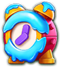 Time Freeze x1. Không suy ra xác suất 1/9 từ giao diện 9 ô. | Đã xác minh | BO-06-daily-reward.png |
| BO-T03 | Streak Race kết thúc | UI ghi rank #8, thưởng 100 coin. | Đã xác minh | BO-07-aftergift.png |
| BO-T04 | Claim thưởng race | Coin từ 996979 lên 997079 sau Tap to Claim; đối chiếu BO-08-postrace và BO-12-play. | Đã xác minh | BO-12-play.png |
| BO-T05 | Pre-booster level 350 | Supply Box và hai booster xuất hiện; mỗi booster 999. Không chọn nên không tiêu. | Đã xác minh | BO-12-play.png |
| BO-T06 | Vào level 350 | Timer 01:00; rèm 2/9; cửa đếm 13/2/23. Đây là bàn mới thực sự chạy, không thay layout trong phiên. | Đã xác minh | BO-13-board.png |
| BO-T07 | Kéo khối xanh bị khối đỏ chắn | Khối xanh không xuyên qua khối đỏ; đối chiếu BO-13-board. | Đã xác minh | BO-14-blocked.png |
| BO-T08 | Kéo khối vàng vào khoảng trống | Khối vàng ngang dịch sang phải, không tự ra cửa đỏ khác màu. | Đã xác minh | BO-15-move.png |
| BO-T09 | Time Freeze | Nhấn booster; count 1002 → 1001, animation đóng băng xuất hiện. Chưa đo chính xác 10 giây bằng timestamp/frame. | Đã xác minh | BO-16-freeze.png |
| BO-T10 | Rocket target | Chọn Rocket rồi khối đỏ góc trên trái; khối bị xóa, count 1000 → 999. | Đã xác minh | BO-18-rocket-result.png |
| BO-T11 | Xuất khối xanh đúng cửa / mở rèm | Sau Rocket, kéo xanh ra cửa xanh bên trái; rèm đầu mở sau tổng 2 khối được xử lý, rèm sau 9 → 7. | Đã xác minh | BO-19-green-exit.png |
| BO-T12 | UFO chọn màu vàng | UFO 999 → 998; bốn lớp/khối vàng bị xử lý, cửa đếm 11 → 7 và rèm 7 → 3; khối nhiều lớp để lộ màu xanh. | Đã xác minh | BO-21-ufo-result.png |
| BO-T13 | Hết giờ | Out of Time hiện +30 sec, Add Time 900 coin. | Đã xác minh | BO-25-playon.png |
| BO-T14 | Play On trả coin | 997079 → 996179, đúng 900; timer về khoảng 30 giây. Bàn giữ nguyên trạng thái sau UFO. | Đã xác minh | BO-26-playon-paid.png |
| BO-T15 | Pause / Resume | Popup Pause có Sound/Music/Haptics, Resume và Quit; resume còn 28 giây, không mất khoảng thời gian đọc popup. | Đã xác minh | BO-28-resume.png |
| BO-T16 | Play On lần hai | Sau hết 30 giây thêm, UI tăng giá lên 1900; xác nhận hai bậc đầu khớp backend, không khớp Firebase 900/900. Không mua bậc hai. | Đã xác minh | BO-29-second-timeout.png |
| BO-T17 | Từ chối Play On / upsell Block Pass | Đóng Out of Time mở Continue? cảnh báo mất mạng, Play On 1900 và Activate Block Pass; không activate. | Đã xác minh | BO-30-quit.png |
| BO-T18 | Failed / về Home | Đóng Continue dẫn tới Failed / Try Again; về Home 4 life, coin 996179; retryCount 2 → 3, levelProgress vẫn 350. | Đã xác minh | BO-32-home-final.png |
| BO-T19 | Purchase / offline receipt | Không thanh toán thật, không đủ nguồn để xác minh cấp thưởng idempotent. | Chưa chạy |
BO-T01 — Khởi động
Hai lần đầu ảnh đen; sau force-stop cả hai game và chỉ mở BlockOut thì load được. Chưa đủ dữ liệu kết luận nguyên nhân memory/GPU.

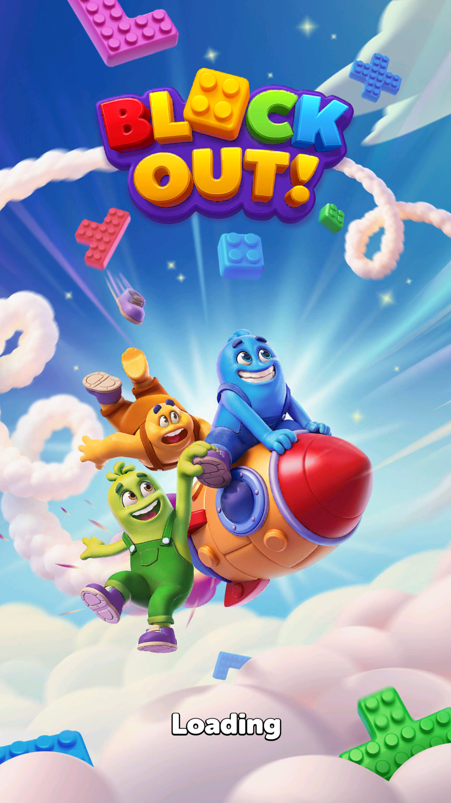
BO-T02 — Daily Gift
Chọn ô giữa hàng trên; nhận Time Freeze x1. Không suy ra xác suất 1/9 từ giao diện 9 ô.

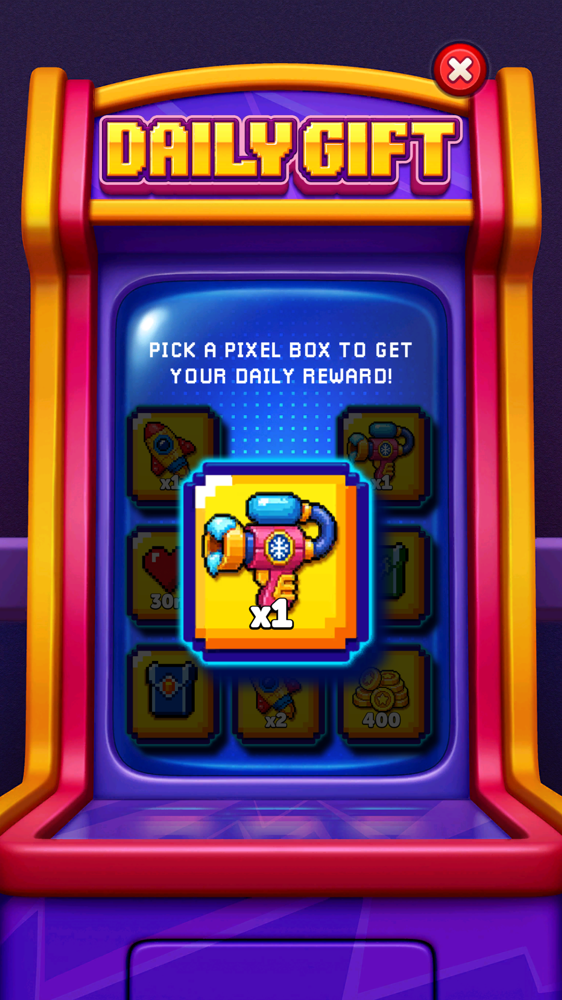
BO-T03 — Streak Race kết thúc
UI ghi rank #8, thưởng 100 coin.

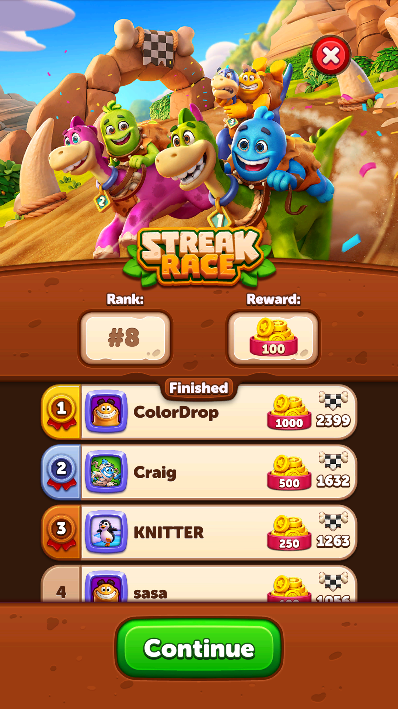
BO-T04 — Claim thưởng race
Coin từ 996979 lên 997079 sau Tap to Claim; đối chiếu BO-08-postrace và BO-12-play.

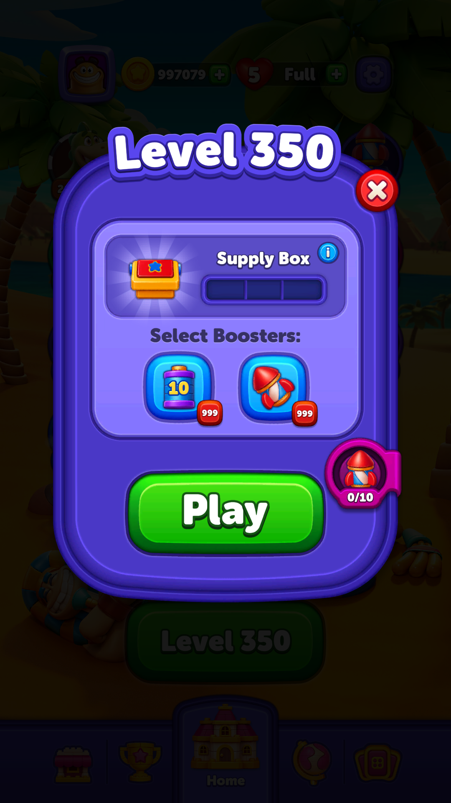
BO-T05 — Pre-booster level 350
Supply Box và hai booster xuất hiện; mỗi booster 999. Không chọn nên không tiêu.
BO-T06 — Vào level 350
Timer 01:00; rèm 2/9; cửa đếm 13/2/23. Đây là bàn mới thực sự chạy, không thay layout trong phiên.

BO-T07 — Kéo khối xanh bị khối đỏ chắn
Khối xanh không xuyên qua khối đỏ; đối chiếu BO-13-board.

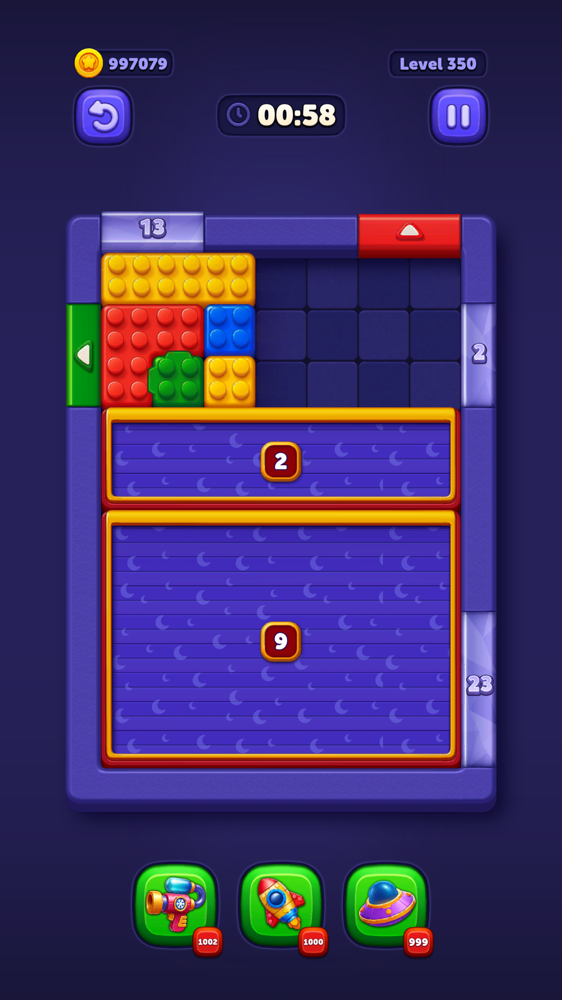
BO-T08 — Kéo khối vàng vào khoảng trống
Khối vàng ngang dịch sang phải, không tự ra cửa đỏ khác màu.

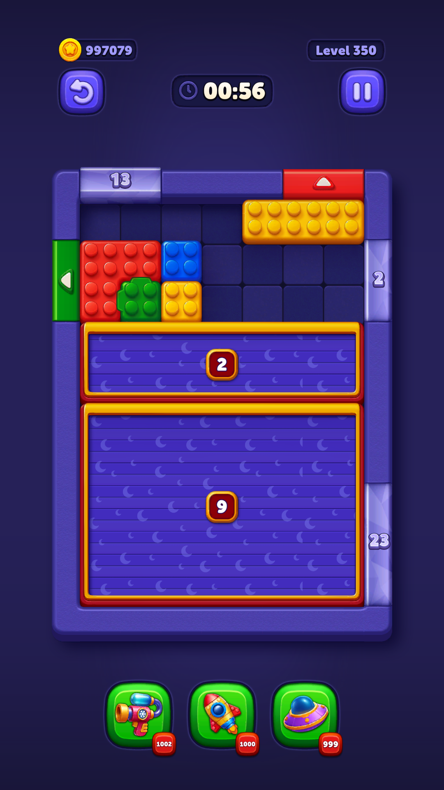
BO-T09 — Time Freeze
Nhấn booster; count 1002 → 1001, animation đóng băng xuất hiện. Chưa đo chính xác 10 giây bằng timestamp/frame.

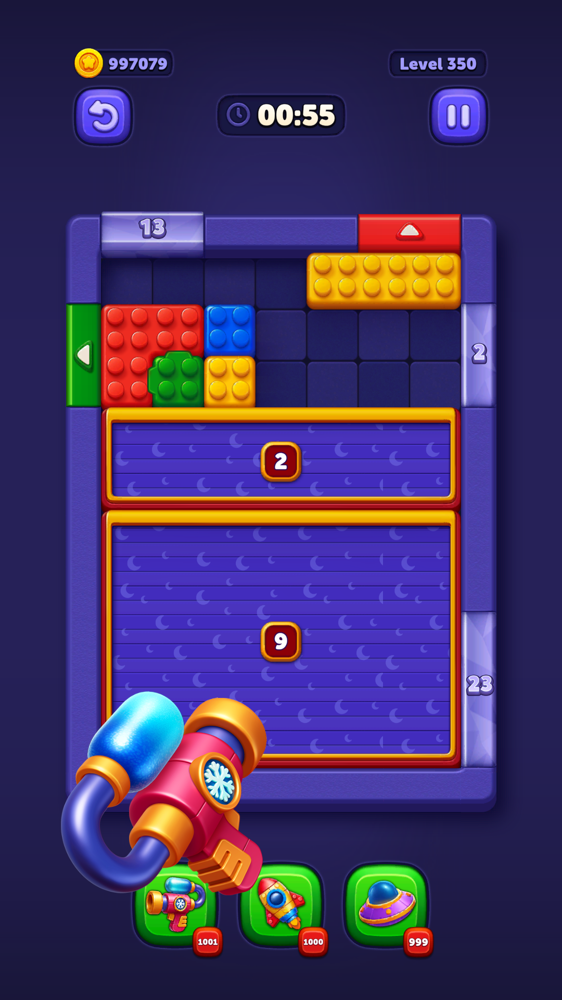
BO-T10 — Rocket target
Chọn Rocket rồi khối đỏ góc trên trái; khối bị xóa, count 1000 → 999.

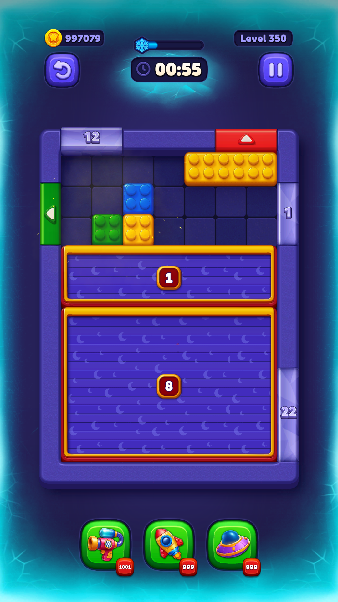
BO-T11 — Xuất khối xanh đúng cửa / mở rèm
Sau Rocket, kéo xanh ra cửa xanh bên trái; rèm đầu mở sau tổng 2 khối được xử lý, rèm sau 9 → 7.

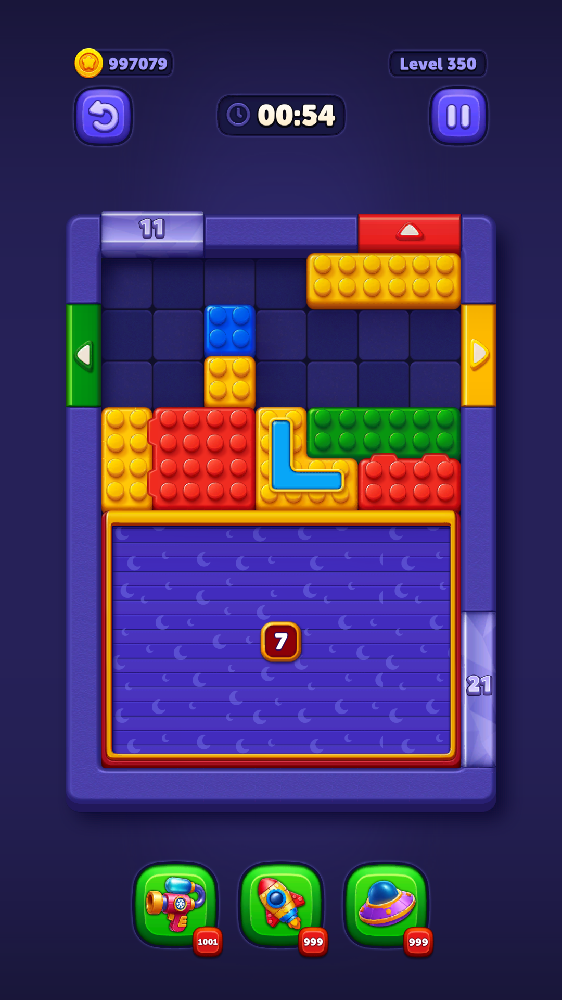
BO-T12 — UFO chọn màu vàng
UFO 999 → 998; bốn lớp/khối vàng bị xử lý, cửa đếm 11 → 7 và rèm 7 → 3; khối nhiều lớp để lộ màu xanh.

BO-T13 — Hết giờ
Out of Time hiện +30 sec, Add Time 900 coin.

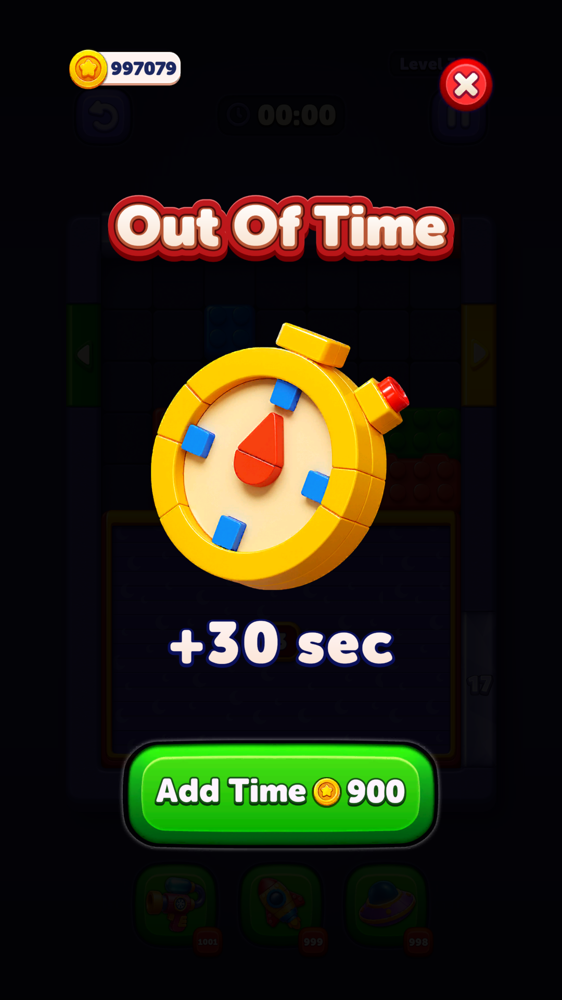
BO-T14 — Play On trả coin
997079 → 996179, đúng 900; timer về khoảng 30 giây. Bàn giữ nguyên trạng thái sau UFO.

BO-T15 — Pause / Resume
Popup Pause có Sound/Music/Haptics, Resume và Quit; resume còn 28 giây, không mất khoảng thời gian đọc popup.

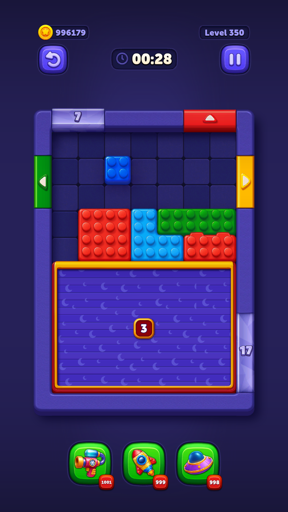
BO-T16 — Play On lần hai
Sau hết 30 giây thêm, UI tăng giá lên 1900; xác nhận hai bậc đầu khớp backend, không khớp Firebase 900/900. Không mua bậc hai.

BO-T17 — Từ chối Play On / upsell Block Pass
Đóng Out of Time mở Continue? cảnh báo mất mạng, Play On 1900 và Activate Block Pass; không activate.

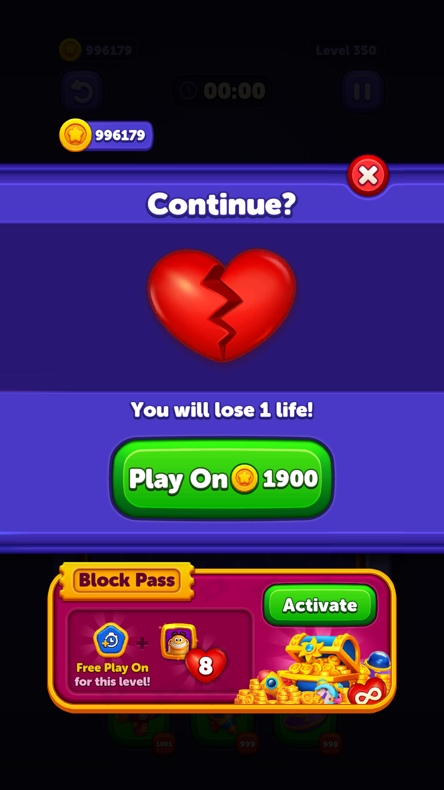
BO-T18 — Failed / về Home
Đóng Continue dẫn tới Failed / Try Again; về Home 4 life, coin 996179; retryCount 2 → 3, levelProgress vẫn 350.

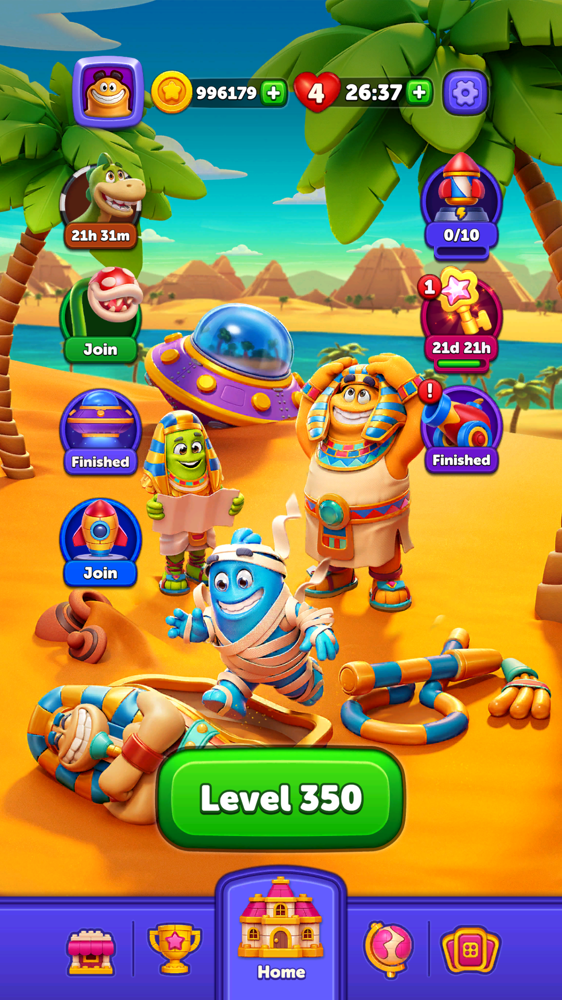